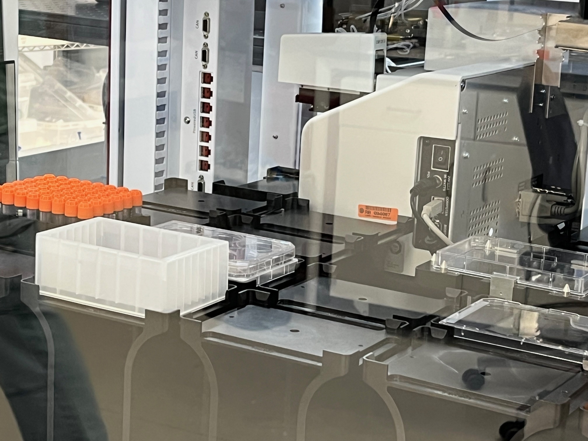

Hope isn't a feeling —
it's a strategy.
Thanks to your generosity, research is ongoing.
And a cure is within reach.
We fund and coordinate research initiatives targeting the root cause of SMA-PME and Farber disease.
Our primary research focus is the development of a stem-cell–based gene therapy for acid ceramidase deficiencies — a "one-and-done" genetic correction targeting the ASAH1 gene directly. Dr. Michelle Allen-Sharpley (Cedars-Sinai) and Dr. Jeffrey Medin (Medical College of Wisconsin) are working in tandem to restore acid ceramidase production at its molecular source.
Active Research ProgramAdditional Research Tracks